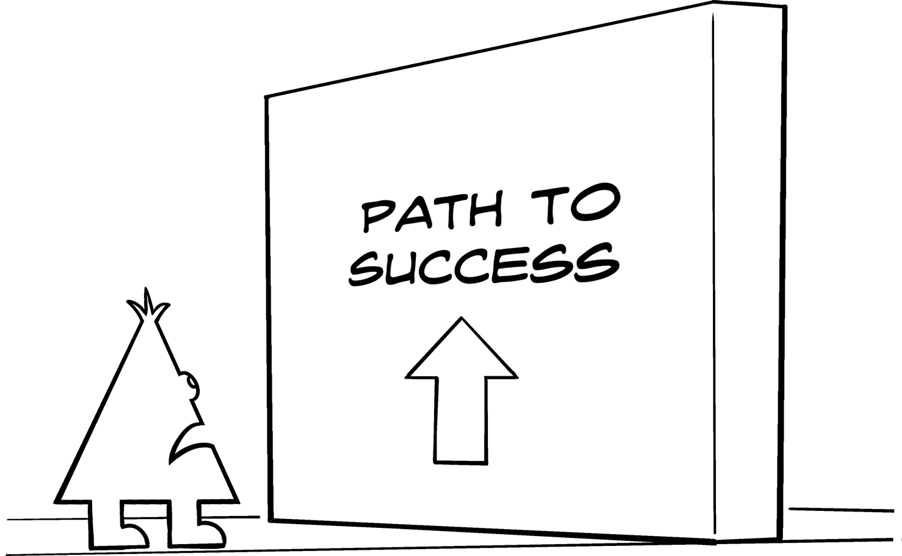
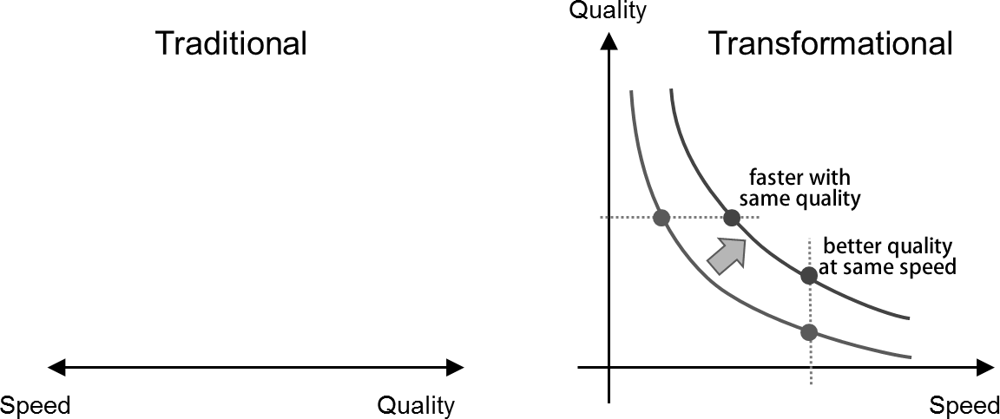

More Degrees of Freedom Can Make Your Head Hurt

A university class on coding theory taught us about spheres in an n-dimensional space. Though the math behind it made a good bit of sense (the spheres represent the “error radius” for encoding, while the space between the sphere is “waste” in the coding scheme), trying to visualize four-dimensional spheres can make your head hurt a good bit. However, thinking in more dimensions can be the key to transforming the way you think about your IT and your business.
IT architecture is a profession of trade-offs: flexibility brings complexity; decoupling increases latency; distributing components introduces communication overhead. The architect’s role is often to determine the “best” spot on such a continuum, based on experience and an understanding of the system context and requirements. A system’s architecture is essentially defined by the combination of trade-offs made across multiple continua.
When looking at development methods, one well-known trade-off is between quality and speed: if you have more time, you can achieve better quality because you have time to build things properly and to test more extensively to eliminate remaining defects. If you count how many times you have heard the argument “We would like to have a better (more reusable, scalable, standardized) architecture, but we just don’t have time,” you start to believe that this God-given trade-off is taught in the first lecture of “IT project management 101.” The ubiquitous slogan “quick-and-dirty” further underlines this belief (Chapter 26).
The folks bringing this argument often also like to portray companies or teams that are moving fast as undisciplined “cowboys” or as building software where quality doesn’t matter as much as in their “serious” business, because they cannot distinguish fast discipline from slow chaos (Chapter 31). The term banana product is sometimes used in this context—a product that supposedly ripens in the hands of the customer. Again, speed is equated with a disregard for quality.
Ironically, the cause for the “we don’t have time” argument is often self-initiated as the project teams tend to spend many months documenting and reviewing requirements or getting approval, until finally upper management puts their fist on the table and demands some progress. During all these preparation phases, the team “forgot” to talk to the architecture team until someone in budgeting catches them and sends them over for an architecture review that invariably begins with, “I’d love to do it better, but…” The consequence is a fragmented IT landscape consisting of a haphazard collection of ad hoc decisions because there was never enough time to “do it right” and no business case to fix it later. The old saying, “nothing lasts as long as the temporary solution,” certainly holds in corporate IT. Most of these solutions last until the software they are built on is going out of vendor support and becomes a security risk.
So what if we add a dimension to the seemingly linear trade-off between quality and speed? Luckily, we are moving only from one to two dimensions, so our head shouldn’t hurt as much as with the n-dimensional spheres. We’d simply have to plot speed and quality on two separate axes of a coordinate system instead of on a single line, as illustrated in Figure 40-1. Now we can portray the trade-off between the two parameters as a curve whose shape depicts how much speed we have to give up to achieve how much better quality.

For simplicity’s sake, you could assume that the relationship is linear, depicted by a straight line. This probably isn’t quite true, though: as we aim to approach zero defects the time we need to spend in testing probably goes up a lot, and as we know, testing can prove only the presence of defects but not their absence. Developing software for life- and safety-critical systems or things that are shot into space are probably positioned on this end of the spectrum, and rightly so. That they rarely achieve zero defects can be seen by the example of the Mars Climate Orbiter, which disintegrated due to a unit error between metric and US measures. At the other end of the continuum, in the “now or never zone,” you may simply reach the limits of how fast you can go. You’d need to slow down a good bit and spend at least some time on proper design and testing to improve quality. So, the relationship likely looks more like a concave curve that asymptotically approaches the extremes at the two axes.
The trade-off between time (speed) and quality still holds in this two-dimensional view, but you can reason much more rationally about the relationship between the two. This is a classic example of how even a simple model can sharpen your thinking (Chapter 6).
When you move into the two-dimensional space, you can ask a much more profound question: “Can we shift the curve?” And: “If so, what would it take to shift it?” Shifting the curve to the upper right would give you better quality at the same speed or faster speed without sacrificing quality. Changing the shape or position of the curve means we no longer need to move along a fixed continuum between speed and quality. Heresy? Or a doorstep to a hidden world of productivity?
Because digital companies see speed and quality as two dimensions, they can think about how to shift the curve.
Probably both, but that’s exactly what digital companies have achieved: they have shifted the curve significantly to achieve never-before-seen speeds in IT delivery while maintaining feature quality and system stability. How do they do it? A big factor is following processes that are optimized for speed (Chapter 35), as opposed to optimizing for resource utilization under the guises of efficiency (Chapter 39).
Digital companies can shift the curve because:
They understand that software runs fast and predictably, so they never send a human to do a machine’s job (Chapter 13).
They optimize end-to-end instead of optimizing locally.
They turn as many problems as possible into software problems so they can automate them and hence move faster and often more predictably.
If something does go wrong, they can react quickly, often with the users barely noticing. This is possible because everything is automated and they use version control (Chapter 14).
They build resilient systems, ones that can absorb disturbance and self-heal, instead of trying to predict and eliminate all failure scenarios.
None of these techniques are rocket science. However, they require an organization to change the way it thinks. And that’s not easy to do.
If adding a new dimension doesn’t make folks’ head hurt enough, tell them that modern software delivery can even invert the curve: faster software often means better software! Much delay in software delivery is caused by manual tasks: long wait times for servers or environments to be set up by hand, manual regressing testing, and so on.
Removing this friction, usually by automating things, not only speeds up software development but also increases quality because manual tasks are often the biggest source of errors (Chapter 13). As a result, you can use speed as a lever to increase quality. For example, you can demand shorter provisioning times for servers in order to increase the level of automation and reduce defects due to human error.
When speaking about speed and quality, we should take a moment to consider what quality really means. Most traditional IT folks would define it as the software’s conformance to specification and possibly adherence to a schedule. System uptime and reliability are surely also part of quality. These facets of quality have the essence of predictability: we got what we asked or wished for at the time we were promised it. But how do we know whether we asked for the right thing? Probably someone asked the users, so the requirements reflect what they wanted the system to do. But do they know what they really want, especially if you are building a system the users have never seen before? One of Kent Beck’s great sayings is, “I want to build a system the users wish they asked for.”
The traditional definition of quality is a proxy metric.
The traditional definition of quality is a proxy metric: we presuppose to know what the customers want, or at least that they know what they want. What if this proxy isn’t a very reliable indicator? Companies living in the digital world don’t pretend to know exactly what their customers want because they are building brand-new solutions. Instead of asking their customers what they want, they observe customer behavior (Chapter 36). Based on the observed behavior they quickly adjust and improve their product, often trying out new things using A/B testing. You could argue that this results in a product of much higher quality, one that the customers wish they could have asked for. So, you not only can shift the curve of how much quality you can get for how much speed, you can also change what quality you are aiming for. Maybe this is yet another dimension?
What happens when a person who is used to working in a world with more degrees of freedom enters a world with fewer, such as an IT organization still holding the belief that quality and speed are opposites? This can lead to a lot of surprises and some headaches, almost like moving from our three-dimensional world to the Planiverse.1 The best way out is reverse engineering the organization’s beliefs (Chapter 26) and then leading change (Chapter 34).
1 Wikipedia, "The Planiverse,” https://oreil.ly/RncTp.